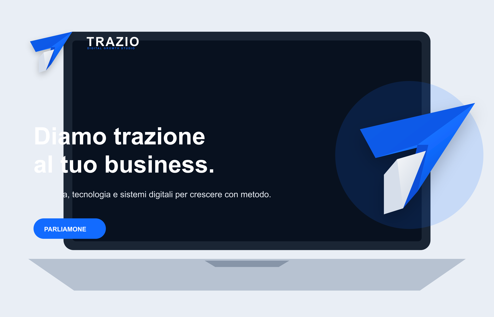

Strategia
Ogni progetto nasce dalla comprensione del business, degli obiettivi e delle persone da raggiungere.
Tecnologia, strategia e design al servizio della crescita del tuo business.
Sono Samuel Gentile, studente di informatica con la passione per la tecnologia e la voglia di mettermi alla prova. Cercavo un modo concreto per dimostrare cosa so fare e come so usare le tecnologie di oggi — da lì, nella primavera del 2026, è nata TRAZIO: mettere queste competenze al servizio di chi ha bisogno di crescere online.
Seguo personalmente ogni progetto, dalla prima call alla messa online: parli sempre con chi progetta e sviluppa il tuo sito, senza passaggi di mano.
Sono all'inizio del mio percorso, e proprio per questo ci metto il doppio dell'impegno: ogni progetto è un'occasione per dimostrare quello che so fare, con pacchetti chiari, tempi definiti e un supporto che non finisce con la pubblicazione del sito.

Ogni progetto nasce dalla comprensione del business, degli obiettivi e delle persone da raggiungere.
Utilizzo strumenti moderni e codice pulito per creare soluzioni affidabili e scalabili.
Non creo solo prodotti digitali belli, ma strumenti pensati per generare valore nel tempo.